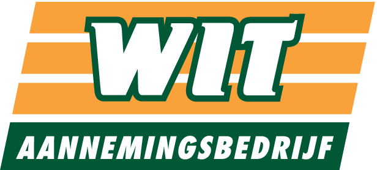

PakbonBezig met verwerken…
De foto’s worden opgeslagen en de mail opent met … en onderwerp Pakbon al ingevuld. Voeg de foto’s toe met de paperclip.
De foto’s gaan meteen mee als bijlage, maar de ontvanger vul je zelf in.
Sleep de hoeken naar de rand van de pakbon.